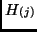
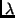

Philip F McLauchlan
The Levenberg-Marquardt
algorithm [3,2]
is a general non-linear downhill minimisation algorithm
for the case when derivatives of the objective function are known.
It dynamically mixes Gauss-Newton and gradient-descent iterations.
We shall develop the L-M algorithm for a simple
case in our notation, which is derived from Kalman filtering
theory [1]. The Ravl implementation of
Levenberg-Marquardt will then be presented. Let the unknown parameters be
represented by the vector  , and let noisy measurements of
, and let noisy measurements of
 be made:
be made:
Now we solve the above equations for and given
the values of function
and the Jacobian

evaluated at the previous estimate .
We have immediately

The update (7) may be repeated,
substituting the new as , and
improving the estimate until convergence is achieved according to some
criterion. Levenberg-Marquardt modifies this updating procedure by
adding a value  to the diagonal elements of the linear system matrix
before inverting it to obtain the update.
is reduced if the last iteration gave
an improved estimate, i.e. if  was reduced, and increased if
increased, in which case the estimate of
was reduced, and increased if
increased, in which case the estimate of  is reset to the
estimate before the last iteration. It is this that allows the algorithm
to smoothly switch between Gauss-Newton (small ) and gradient
descent (large ).
is reset to the
estimate before the last iteration. It is this that allows the algorithm
to smoothly switch between Gauss-Newton (small ) and gradient
descent (large ).
This version is a generalization of Levenberg-Marquardt as it is normally presented (e.g. [4]) in that we incorporate vector measurements with covariances , rather than scalar measurements with variances. The full algorithm is as follows:
If the measurements
are unbiased and normally distributed,
the residual
 is a
is a  random variable, and testing
the value of
random variable, and testing
the value of  against a
against a  distribution is a good way
of checking that the measurement noise model is reasonable.
The number of degrees of freedom (DOF) of the
distribution is a good way
of checking that the measurement noise model is reasonable.
The number of degrees of freedom (DOF) of the  distribution
can be determined as the total size of the measurement vectors,
minus the size of the state.
If the function returns the dimension of its vector
argument, then the degrees of freedom may be computed as
distribution
can be determined as the total size of the measurement vectors,
minus the size of the state.
If the function returns the dimension of its vector
argument, then the degrees of freedom may be computed as